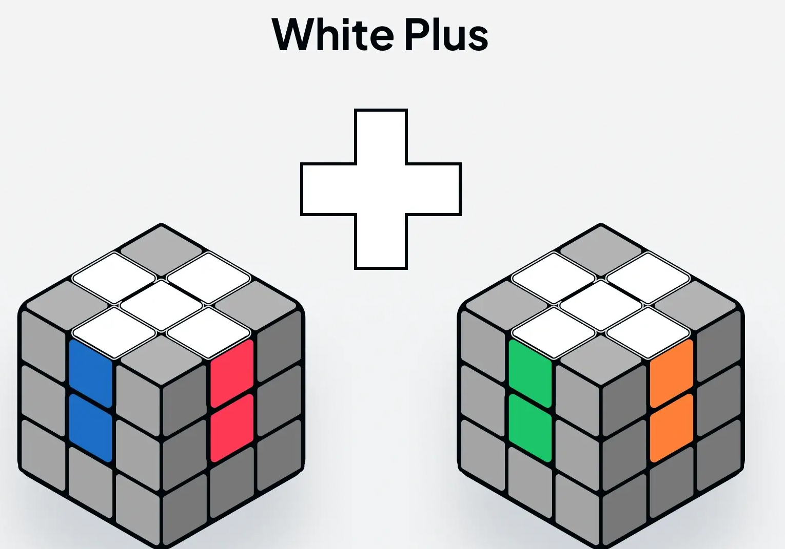
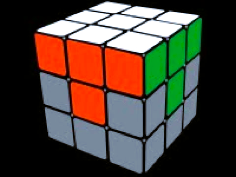
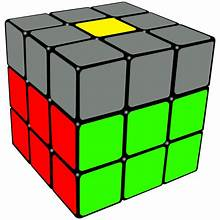
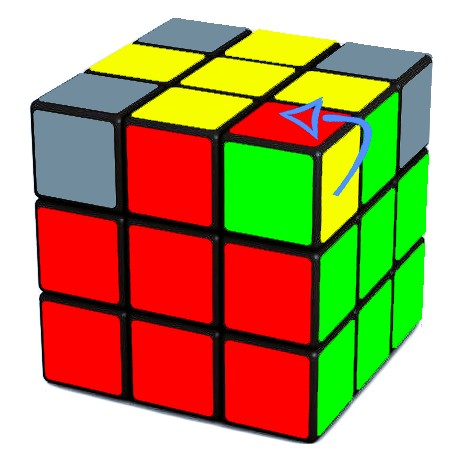
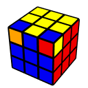
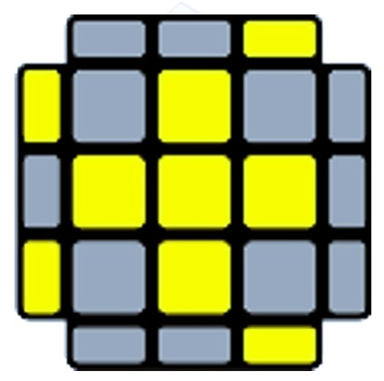

Step-by-Step Beginner Method
1. Solve the White Cross
Goal: Make a white cross on one face while aligning the side colors with the center pieces of the adjacent faces.
How to do it: Use intuitive moves to bring white edge pieces to the bottom (or top) layer depending on how you hold the cube for orientation. Focus on matching both the white face and the side colors with their centers. This step usually doesn’t require strict algorithms, just careful observation.
2. Solve the White Corners
Goal: Complete the first layer by placing the four white corner pieces in their correct positions and orientations.
Algorithm: R' D' R D
Instructions: Hold the solved white cross on the bottom or top, whatever is comfortable. Using intuitive moves and the yellow layer to move pieces around place an unsolved white corner slot above or below where it should slot in. As long as the white part of the corner is not facing the yellow center you will be good to slot it in place. For exaple if we are putting in the white, green, orange corner, and the cube is oriented with the white side on top you will line the corner up under the spot it is supposed to go in (between the two colored centers that are not white). Push the corner away from the color (green in this example) it is matching with and towards the other color (orange) of the corner piece that isn't white. Then using that layer of the color (green) you went away from bring down the white edge and use the bottom (yellow) to move the corner and attach it to the white edge. Next take the white pieces back up to the top by turning the color (green) you brought down back up. Now you should have the white corner lined up with the correct colors. Repeat this process for all the white corners.
You can reverse the directions of up and down if you hold the cube with the white face on the bottom.
3. Solve the Middle Layer Edges
Goal: Insert the four edge pieces into the middle layer without disturbing the solved white face.
Algorithms:
Edge to the right: U R U' R' U' F' U F
Edge to the left: U' L' U L U F U' F'
Instructions: This process is similar to the white corners, but we don't want to break up the white layer we have complete.
That's why algorithims are important, they are specific sets of moves that will only change a few pieces.
Again hold the cube in whatever orientatoin is comfortable for you.
We will start by identifying an edge in the bottom or top layer. This will be an edge piece that has no yellow.
Align it with the center of the corresponding color. As an example I am going to align the blue/orange edge with the orange side because the blue side is touching the yellow center.
Decide if it goes to the left or right by where the center for the color that is touching yellow is located.
For my example the blue center is on the right if we have the cube oriented with the white face on the bottom.
Then we will use the matching algorithm. So for my example we use the right algorithm, this starts with us moving that edge away from the blue side and then bringing the blue, orange, white corner to the yellow layer.
We bring the edge back to where it was so it is aligned with the one color again (orange), and then we move the white pieces that are still together back to the white center face.
This attatches the edge piece to the corner, and we just slot it all together back into the white again. Now the middle layer edge should be aligned with its corrosponding colors.
Repeat the process for all middle layer edges.
If there are edges in the wrong spots or they are flipped, just slot an edge with yellow into the spot as a placeholder. Additionally, the algorithms will be almost entirely flipped if your orientation is flipped. As such if white is on top the algorithm to slot the edge in the left would look more like: D L D' L' D' F' D F
4. Form the Yellow Cross
Goal: Form a yellow cross on the top face disregard any of the corner positions.
Algorithm: F R U R' U' F'
Instructions: Now we are on the Last Layer of the cube. There are many different ways and algorithms to finish solving the cube, I am going to show you how I do it. We will use the same algorithm multiple times, but it has an order for the orientation of the yellow edges. We are looking to make a cross with the yellow pieces. To do this there are some patterns you will need to learn and recognize so you can keep moving forward. If you start with just the yellow dot you are at the very begining of the chain. The second part of the chain is when two pieces form a curved L. When you do the algorithm you want to orient the cube so the two edges are on the left and back side (or the right and front) so it will move the yellow pieces and get you to the next part of the chain. Then the third part of the chain is the long bar. You will want to orient the cube so the bar is horizontal (left to right) for the chain to move forward and get to the cross. If you do not orient it this way you will reset the chain and start with the dot again. The final part of the chain is the yellow cross and you will be ready to move on.
Depending on your top face pattern, hold the cube accordingly and apply the algorithm until the yellow cross forms.

5. Orient the Yellow Edges
Goal: Rotate the yellow edge pieces so they match the adjacent center colors.
Algorithm: R U2 R' U' R U' R' U' (used as needed for each edge)
Instructions: For this step we need to look at all the edges and see which two are already in the proper places. You may have to rotate the yellow layer a couple of times, but two of the yellow edges should line up correctly with their respective other color centers. If they are across from eachother (blue/green or red/orange) you will need to do this algorithm twice. For the orientation if they are straight across from eachother have two that are correct be on the front and back faces and do the algorithm. Then once you have two that are the curved L shape have the orientation be with the correct edges on the back and left sides and repeat the algorithm.
This one is pretty straightforward, as long as you don't mess up the algorithm you will not break any other layers so go slow and steady.

6. Position Yellow Corners
Goal: Place all yellow corners in their correct location (orientation may not be correct yet).
Algorithm: U R U' L' U R' U' L or L' U R U' L U R' U'
Instructions: Look at the yellow corners and see if one of them is already in the corect spot. Such as if the green, red, yellow corner is in between the green and red edges on the yellow top layer. For the algorithm (both versons work) you want to keep a correctly placed corner at the front-right of the top face. Then apply the algorithm until all corners are in their correct positions. Don't worry if they are twisted and not facing the corect colors, we just want them in the right spot.
7. Orient Yellow Corners
Goal: Rotate yellow corners so the top face is completely yellow.
Algorithm (Headlights): R U2 R' U' R U' R' - L' U2 L U L' U L
Instructions: The algorithm for turning the corners is a little long. It does split equally in the middle for the what side you are working with so take it slow. The common pattern we are looking for is what I call yellow 'headlights.' There are two normal ways the yellow corners will align for this, it will have the corners looking the same way or they will be looking away from eacother. If they are looking the same direction then the algorithm is only needed once. If they are looking away from one another you can either do the algorithm twice or do it in reverse. If you don't immediatly see 'headlights' you probably need to do the algorithm on one side to fully fix one corner and have the second align for the 'headlights.' The orientation you want to hold the cube is with the two corners you want to rotate starting on the right face of the cube. Then you do the algorithm and it will only spin the corner pieces. Repeat for the other corners as required.
 8. Solved Cube
Goal: Feel the sense of completion after solving your Rubik's Cube.